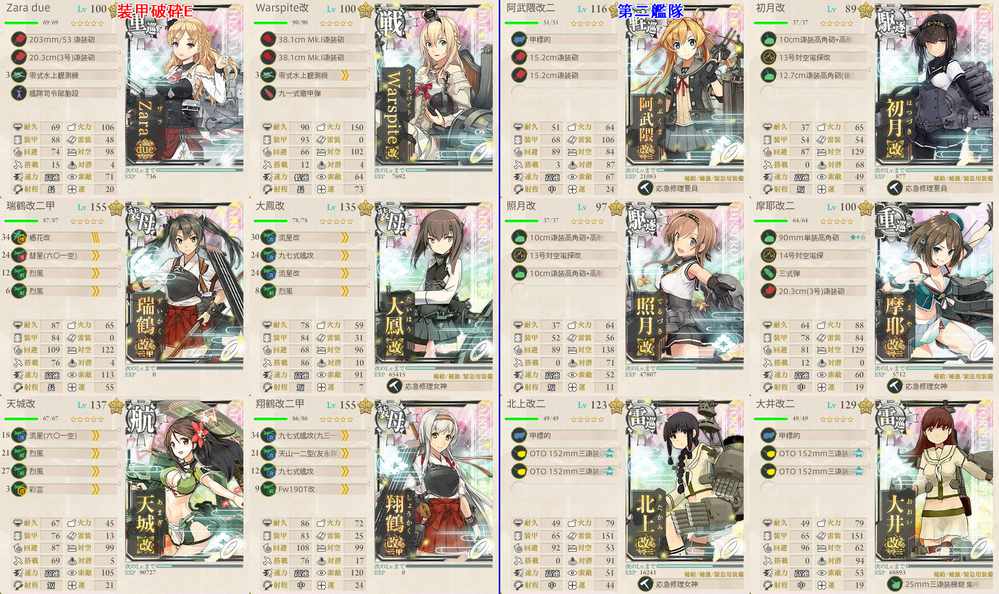
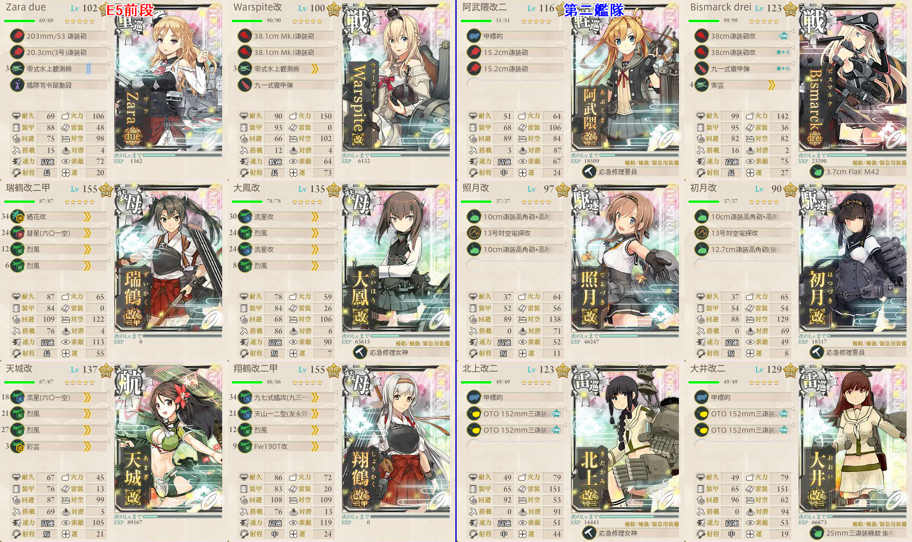
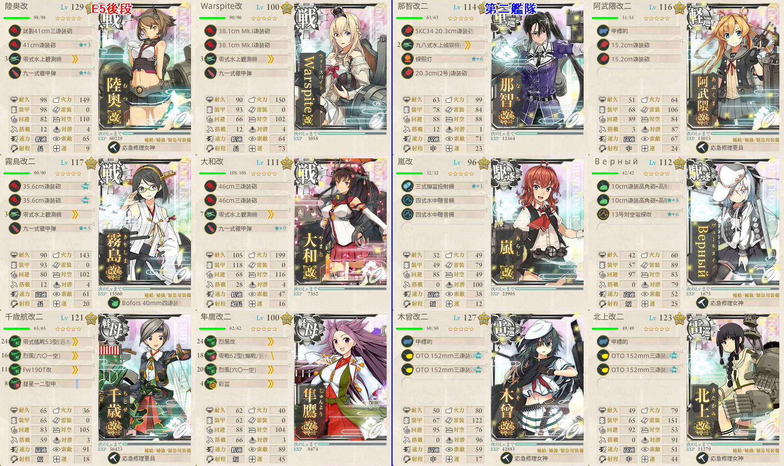
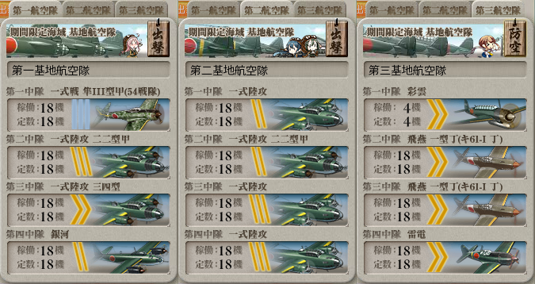

【艦これ】出撃！北東方面 第五艦隊 E5
難易度：甲
装甲破砕E
- C, D, EマスでS勝利し、空襲被害なしを１回達成すると後段ゲージボス弱体化
- 前段ゲージ攻略時にDとEを攻略しておく
- Dは前段、Cは後段の攻略のついでに達成できるが、Eのみ専用構成で出撃する
構成

- 機動部隊
- 特に支援や基地航空隊の配備は必要ない
出撃ログ（甲）
| 回数 | 編成 | ルート | 戦果 | |
|---|---|---|---|---|
| 1 | 第一 | Zara Warspite 瑞鶴 大鳳 天城 翔鶴 | AE | S勝利 |
| 第二 | 阿武隈 初月 照月 摩耶 北上 大井 | |||
敵編成
| マス | 敵航空戦力 | 敵潜水艦 | 備考 |
|---|---|---|---|
| E | あり | なし | エリヌx2 軽巡2 駆逐2 |
前段撃滅作戦
構成

- 機動部隊
- 制空500程度で基地航空隊と合わせ、ボスに対し制空権確保
支援艦隊
- 駆逐2戦艦2空母2の構成で、道中決戦両方出す
基地航空隊
- 戦闘可能半径6以上の陸軍戦闘機1 + 陸攻3の構成を2部隊ボスへ
- 第三航空隊は彩雲+局地戦闘機で防空
出撃ログ（甲）
| 回数 | 編成 | ルート | 戦果 | |
|---|---|---|---|---|
| 1 | 第一 | Zara Warspite 瑞鶴 大鳳 天城 翔鶴 | ADGLMR | S勝利（子日） |
| 第二 | 阿武隈 Bismarck 照月 初月 北上 大井 | |||
| 2 | 第一 | Zara Warspite 瑞鶴 大鳳 天城 翔鶴 | ADGLMR | 空襲損害なし S勝利（ドロップなし） |
| 第二 | 阿武隈 Bismarck 照月 初月 北上 大井 | |||
| 3 | 第一 | Zara Warspite 瑞鶴 大鳳 天城 翔鶴 | ADGLMR | A勝利（ドロップなし） ゲージ破壊 |
| 第二 | 阿武隈 Bismarck 照月 初月 北上 大井 | |||
敵編成
| マス | 敵航空戦力 | 敵潜水艦 | 備考 |
|---|---|---|---|
| D | あり | なし | 軽巡1 フラヌ改1 雷巡2 駆逐2 |
| G | あり | なし | 戦艦3 フラヌ改1 駆逐2 |
| L | あり | なし | 空襲戦 空母おばさん |
| M | あり | なし | 空母おばさん1 フラヌ改1 軽巡2 駆逐2 輪形陣 |
| R | あり | なし | ボス 連合艦隊 旗艦ダイソン フラヌ改2 |
後段撃滅作戦
構成

- 制空380
- Bマスのため、先制対潜を用意
- 特攻の那智/阿武隈/Верный/木曾を採用
支援艦隊
- 前段作戦同様
基地航空隊

Cギミック解除時のみ、Cに集中しても良い
ソレ以外はボス集中
第三航空隊は防空
ラストダンスのみ、火力が足りないので防空を捨てて二式大艇＋艦爆の編制をボスに出す
出撃ログ（甲）
| 回数 | 編成 | ルート | 戦果 | |
|---|---|---|---|---|
| 1 | 第一 | 陸奥 Warspite 霧島 大和 千歳 隼鷹 | BC | C S勝利 ギミック解除 |
| 第二 | 那智 阿武隈 照月 時雨 木曾 北上 | |||
| 2 | 第一 | 陸奥 Warspite 霧島 大和 千歳 隼鷹 | BCFJNOT | A勝利（比叡） |
| 第二 | 那智 阿武隈 嵐 Верный 木曾 北上 | |||
| 3 | 第一 | 陸奥 Warspite 霧島 大和 千歳 隼鷹 | BCFJNOT | S勝利（由良） |
| 第二 | 那智 阿武隈 嵐 Верный 木曾 北上 | |||
| 4 | 第一 | 陸奥 Warspite 霧島 大和 千歳 隼鷹 | BCFJNOT | A勝利（伊勢） |
| 第二 | 那智 阿武隈 嵐 Верный 木曾 北上 | |||
| 5 | 第一 | 陸奥 Warspite 霧島 大和 千歳 隼鷹 | BC | Warspite大破 |
| 第二 | 那智 阿武隈 嵐 Верный 木曾 北上 | |||
| 6 | 第一 | 陸奥 Warspite 霧島 大和 千歳 隼鷹 | BCFJNOTr2! | S勝利（伊勢） |
| 第二 | 那智 阿武隈 嵐 Верный 木曾 北上 | |||
| 7 | 第一 | 陸奥 Warspite 霧島 大和 千歳 隼鷹 | BCFJNO | A勝利（日向） |
| 第二 | 那智 阿武隈 嵐 Верный 木曾 北上 | |||
| 8 | 第一 | 陸奥 Warspite 霧島 大和 千歳 隼鷹 | BCFJNOT | A勝利（筑摩） |
| 第二 | 那智 阿武隈 嵐 Верный 木曾 北上 | |||
| 9 | 第一 | 陸奥 Warspite 霧島 大和 千歳 隼鷹 | BCFJNOT | A勝利（伊勢） |
| 第二 | 那智 阿武隈 嵐 Верный 木曾 北上 | |||
| 10 | 第一 | 陸奥 Warspite 霧島 大和 千歳 隼鷹 | BCF | 霧島大破 |
| 第二 | 那智 阿武隈 嵐 Верный 木曾 北上 | |||
| 11 | 第一 | 陸奥 Warspite 霧島 大和 千歳 隼鷹 | BCFJNOT | A勝利（伊勢） |
| 第二 | 那智 阿武隈 嵐 Верный 木曾 北上 | |||
| 12 | 第一 | 陸奥 Warspite 霧島 大和 千歳 隼鷹 | BCF | 大和大破 |
| 第二 | 那智 阿武隈 嵐 Верный 北上 木曾 | |||
| 13 | 第一 | 陸奥 Warspite 霧島 大和 千歳 隼鷹 | BCFJNOT | A勝利 |
| 第二 | 那智 阿武隈 嵐 Верный 北上 木曾 | |||
| 14 | 第一 | 陸奥 Warspite 霧島 大和 千歳 隼鷹 | BCFJNOT | A勝利（鈴谷） ゲージ破壊 |
| 第二 | 那智 阿武隈 嵐 Верный 北上 木曾 | |||
- 8回目からラストダンス
敵編成
| マス | 敵航空戦力 | 敵潜水艦 | 備考 |
|---|---|---|---|
| B | なし | あり | 潜水艦のみ フラソ1 エリソ2 |
| C | あり | なし | 空襲戦 ヲ改1 ヌ改1 |
| F | あり | なし | ヲ改1 ヌ改1 戦艦1 ツ級1 駆逐2 複縦陣 |
| N | なし | なし | 戦艦2 ツ級2 駆逐2 単縦陣 |
| O | あり | なし | 空襲戦 姫 ダイソン 戦艦2 フラヌ改2 |
| T | あり | なし | ボス 連合艦隊 旗艦：北方水姫 ダイソン フラヌ改 第二艦隊に古姫 |
| あり | なし | ラストダンス ダイソン2 | |